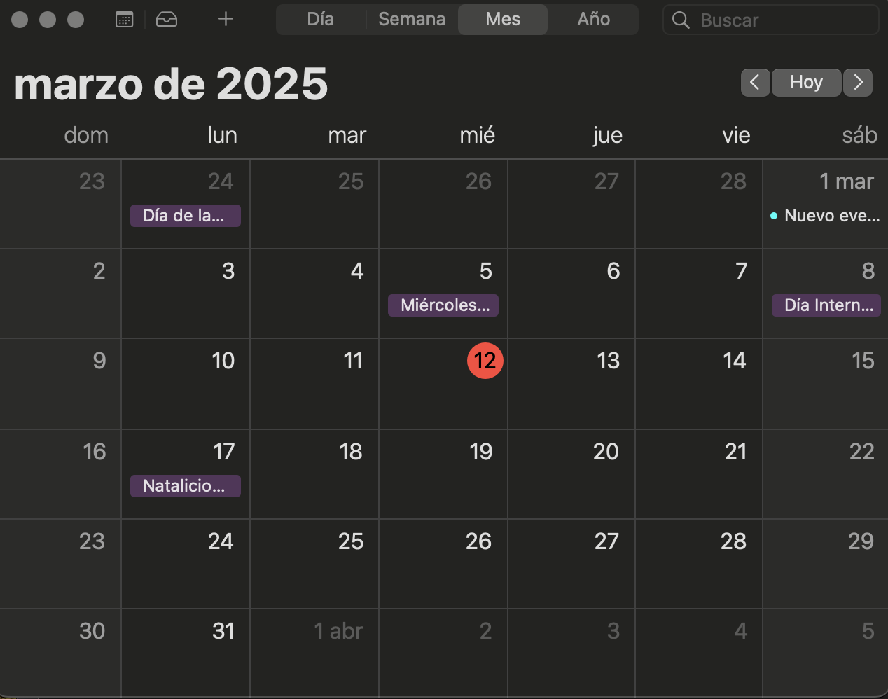

install.packages("ggmap", contriburl = "both")2 Geocodificación
La geocodificación es el proceso de transformar las direcciones físicas de los domicilios a coordenadas geográficas (latitud y longitud). La geocodificación se realiza a través del servicio de Geocoding API de Google, con la función ggmap::geocode del paquete ggmap & la funcion denhotspots::geocoden() del paquete denhotspots. El proceso de geocodificación se realiza en tres fases. En la primera fase se sube la base de datos de los casos del SINAVE a RStudio y se extrae la información del país/estado/municipio de interés. Si la geocodificación se realiza la primera vez, el proceso es més simple que la segunda vez. Dado que la frecuencia de la geocodificación es semanal y las bases de dengue son bases de datos acumulados, se requiere extraer la base de la semana actual de los casos no geocodificados (casos nuevos, casos de la presente semana) a través de realizar la diferencia entre la semana pasada (casos acumulados geocodificados, asumiendo que se geocodificó desde el primero de enero hasta la semana pasada) y la semana actual (geocodificación por segunda vez). La idea es geocodificar solo los casos que salieron la presente semana y no volver a geocodificar todas las semanas acumuladas incluida la semana actual. Finalmente el archivo se guarda con extensión csv y con el nombre del estado y la fecha, por ejemplo dengue_aguascalientes_2025_03_11 ó dengue_edo01_2025_03_11..
En la segunda fase, el archivo csv se sube a RStudio, se crea un vector de direcciones, se realiza manipulación del vector de direcciones si se requiere (por ejemplo, se sustituye # por NUM o NUMERO), se geocodifica y se guarda en archivo temporal, une la base de coordenadas y la base del sinave, finalmente se guarda en un archivo RData.
En la tercera fase, cuando se geocodifica por primera vez (casos acumulados del 1 de enero al 3 marzo, el archivo resultado de la segunda fase, se sube y se guarda. Pero cuando se geocodifica la segunda ves se requiere eliminar los casos descartados y unir la base acumulada (1 enero al 3 marzo) con la base de la ultima semana (10 marzo). Acontinuación se describe el procesos para poder geocodificar en R.
3 APIs de Google
Para realizar el proceso de geocodificación descrito en los parrafos precedentes requiere que el personal de vectores gestione dos APIs de Google Geocoding API y Static Maps API. La primera API sirve para geocodificar las bases de los casos de dengue del sinave y la segunda API sirve para extraer los mapas satelitales para la visualización de las cadenas de transmisión y los mapas de calor.
API es un acrónimo de “Interfaz de Programación de Aplicaciones”. Es un conjunto de reglas y protocolos que permiten que las aplicaciones de software se comuniquen entre si.
4 Geocodificación en R
Los requisito básicos para la geocodificación en R son:
- Tener instalado R & RStudio
- Instalar los paquetes ggmap y denhotspots
- Contar con su proyecto de geocodificación
Instalación de ggmap
Instalación de denhotspots
pak::pkg_install("fdzul/denhotspots")En caso de que no se pueda instalar con el paquete pak, lo cual es poco probable, se puede intentar instalar con los paquetes remotes o devtools.
remotes::install_github("fdzul/denhotspots")
devtools::install_github("fdzul/denhotspots")Proyecto de geocodificación
Bajar la carpeta geocodificación_dengue_sinave alojada en github y descomprimirla. La carpeta contiene los 32 folder para cada entidad federativa, y cada estado selecionará su carpeta correspondiente con su entidad.
En el proyecto se encontraran cuatro carpetas o folders (1.data, 2.script, 3.geocoded_data, 4.RData) y el nombre del proyecto personalizado por estado. Como ejemplo se usa el proyecto del estado de Jalisco 14 (geocodificacion_dengue_sinave_edo14) para ilustrar las carpeta alojadas en el proyecto.
En la carpeta 1.data se encuentran don subfolders (1.semana_actual_recientes & 2.ultima_semana_acumulado), en el primero se guardó la base del SINAVE con la fecha más reciente donde se encuentran los casos de la última semana (2025-03-10) y en el segundo folder se encuentra la base del SINAVE con fecha del 2025-03-03.
fs::dir_tree("/Users/felipedzul/Desktop/geocodificacion_dengue_sinave_edo14",
recurse = 3)/Users/felipedzul/Desktop/geocodificacion_dengue_sinave_edo14
├── 1.data
│ ├── 1.semana_actual_recientes
│ │ ├── DENGUE2025_10-3-2025.rar
│ │ └── DENGUE2_.txt
│ └── 2.ultima_semana_acumulado
│ ├── DENGUE2025_3-3-2025.rar
│ └── DENGUE2_.txt
├── 2.script
│ ├── 1.primera_vez
│ │ ├── 1.0.cargar_la_base_datos_dengue_primera_vez.R
│ │ ├── 2.0.geocodificación_dengue_dataset.R
│ │ └── 3.0.guardar_acumulados.R
│ └── 2.segunda_vez
│ ├── 1.1.cargar_la_base_datos_dengue.R
│ ├── 2.1.geocodificación_dengue_dataset.R
│ └── 3.1.unir_ultima_semana_&_acumulados.R
├── 3.geocoded_data
├── 4.RData
└── geocodificacion_dengue_sinave_edo14.RprojLa carpeta 2.script contiene dos folders, la 1.primera_vez y 2.segunda_vez. La primera carpeta (1.primera_vez) tiene la función de geocodificar los casos de dengue de la base del SINAVE del 1 de enero de 2025 al 3 de marzo del 2025 (casos acumulados hasta el 3 de marzo) y la segunda carpeta (2.segunda_vez) su meta es actualizar la geocodificación con los casos del 4 de marzo al 10 de marzo, de tal forma que actualiza la base de casos geocodificados hasta el 10 de marzo. En conclusión primero se corren los scripts de la carpeta 1.primera_vez y posteriormente se corren los scripts de la carpeta 2.segunda_vez, al final tendremos un archivo actualizado del 1 enero al 10 de marzo del presente año. En ambos casos los scripts se deben correr secuencialmente de acuerdo con el número de scripts.

Las carpetas 3.geocoded_data y 4.RData, conforme se corran los scripts de las carpetas 1.primera_vez y 2.segunda_vez, se iran generando archivo R.Data que se usarán como input para algunos segmentos de código y como input para las cadenas de transmisión o mapas de calor.
En la próxima semana (17 de marzo que es día festivo ó 18 de marzo), recuerden que tienen que bajar la base de datos del SINAVE con fecha del 17 ó 18. Guardar el archivo con extensión rar en el carpeta 1.semana_actual_reciente y descomprimirlo. El archivo con fecha 10 de marzo del 2025 se debe pasar a la carpeta 2.ultima_semana_acumulado.
Este proceso tiene que iterativamente realizarse cada semana junto con la geocodificación.